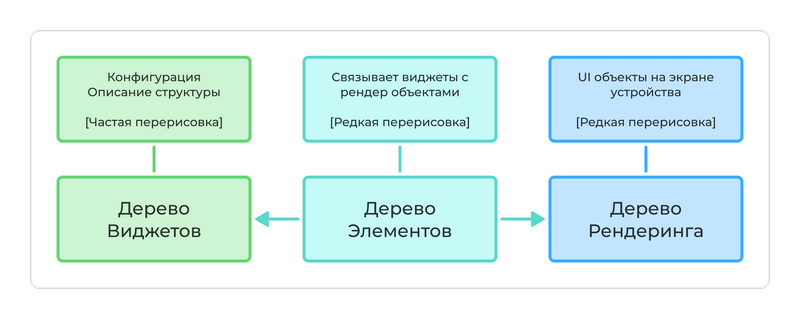
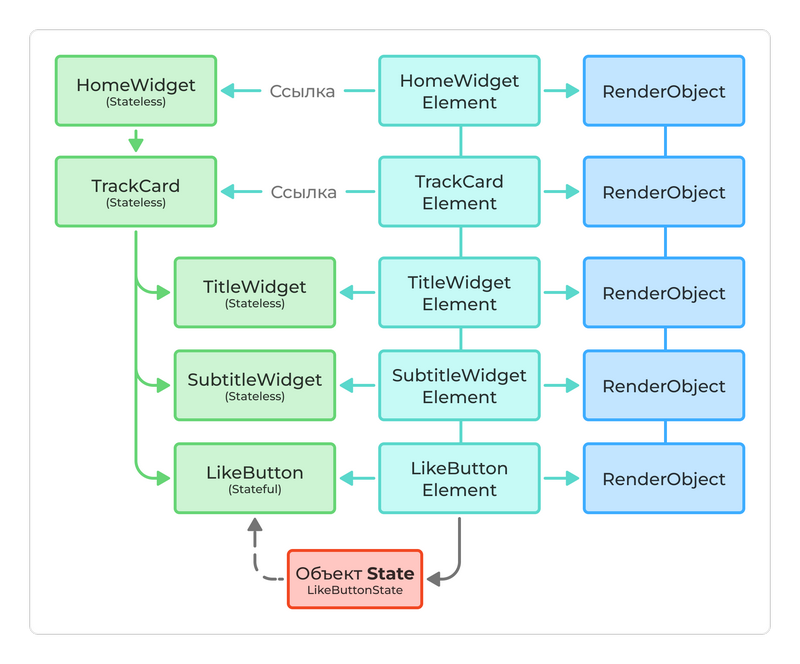
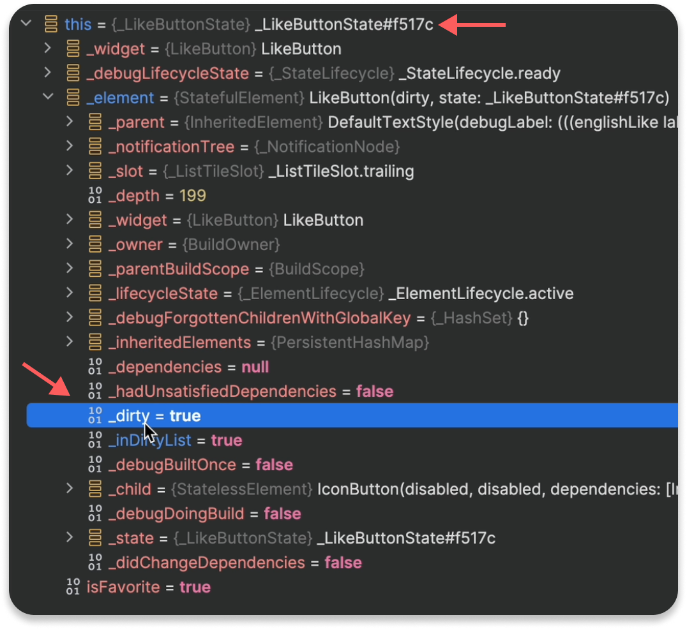
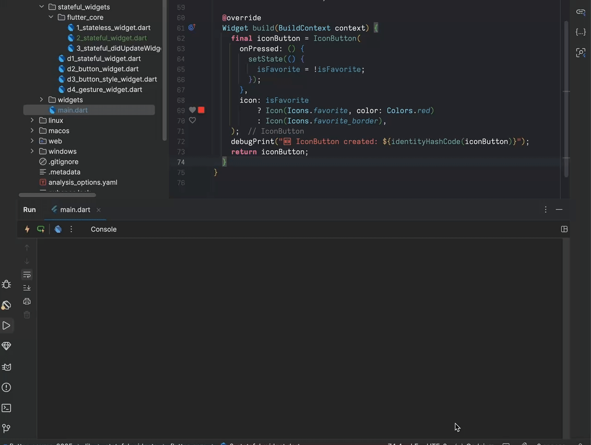

Stateful Виджет
Что такое `Stateful Widget`
StatefulWidget не хранит состояние сам и даже не имеет метод build(), но он умеет создавать и связывать с собой объект State, который уже отвечает за хранение состояния и управление обновлениями UI.
StatefulWidget — это лишь "оболочка", которая делегирует всю работу по управлению состоянием и построению UI своему State.
StatefulWidget — изменяет своё состояние в процессе работы приложения. Он состоит из двух классов:
- Сам виджет (StatefulWidget).
- Состояние (State), которое управляет изменяемыми данными.
Производительность Flutter
Чтобы отобразить пользовательский интерфейс (UI) на экране, Flutter вызывает метод build(). Этот метод присутствует у каждого виджета и может вызываться довольно часто.
При каждом вызове build() весь виджет перерисовывается, что звучит крайне неэффективно. Однако Flutter устроен умнее и не обновляет весь UI целиком.
Flutter оптимизирован для работы при 60 кадрах в секунду (fps) и поддерживает 120+ fps на современных устройствах.
Flutter использует эффективный механизм отрисовки:
- При первой отрисовке выполняются все необходимые вычисления:
— определение положения и размеров элементов,
— установка цвета, текста и других параметров.
Это самый затратный этап, каждый пиксель нужно рассчитать и настроить. - При последующих вызовах метода
build()FlutterНЕ пересоздаётвесь UI заново, если в нём ничего не изменилось.
Вместо этого он использует уже рассчитанные данные и снова показывает их на экране. Это позволяет значительно ускорить рендеринг. - Реальная перерисовка затрагивает только те части интерфейса, состояние которых изменилось. Таким образом, Flutter обновляет только необходимые элементы, что делает его работу максимально эффективной.
🌳 Лес , деревья и Flutter
В основе архитектуры Flutter лежат три дерева, которые взаимодействуют друг с другом для эффективного построения и обновления пользовательского интерфейса (UI):
- Дерево виджетов (
Widget Tree) - Дерево элементов (
Element Tree) - Дерево рендеринга (
RenderObject Tree)
Дерево виджетов
Представляет собой виджеты которые разработчики пишут в коде при создании Flutter приложения.
Это дерево создаётся вызовом метода build() и предоставляет описание того, как должен выглядеть UI. Важно понимать, что дерево виджетов не отображается на экране, оно только сообщает Flutter, что нужно отрисовать.
Дерево виджетов часто перестраивается, например, при вызове setState(). Однако это не означает, что весь UI пересоздаётся с нуля.
Дерево элементов
Это ключевая часть внутренней работы Flutter. Это дерево автоматически создаётся на основе дерева виджетов и связывает виджеты (конфигурации) с реальными объектами рендеринга (то что показывается на экране устройства)
Дерево элементов не перестраивается при каждом вызове build(). Оно управляется более эффективно и служит мостом между описанием (виджетами) и фактическим отображением (рендерингом).
Дерево рендеринга
Это то, что в итоге отображается на экране. Это дерево состоит из объектов, которые непосредственно отвечают за отрисовку пикселей. Flutter обновляет только те части, которые изменились, что делает процесс рендеринга очень эффективным.
Итого
- Дерево виджетов предоставляет описание UI. Оно часто перестраивается, но это не затрагивает производительность, так как это всего лишь конфигурация.
- Дерево элементов связывает виджеты с объектами рендеринга и управляет их жизненным циклом. Оно обновляется только при необходимости.
- Дерево рендеринга отвечает за отрисовку на экране. Оно изменяется только тогда, когда это действительно требуется.


Файл main.dart


class HomeWidget extends StatelessWidget {
HomeWidget({super.key}) {
debugPrint("💛 HomeWidget constructor");
}
@override
Widget build(BuildContext context) {
debugPrint("💛 HomeWidget build");
return Container(
width: double.infinity,
decoration: BoxDecoration(
gradient: LinearGradient(
colors: [Color(0xFFBFF098), Color(0xFF6FD6FF)],
begin: Alignment.topLeft,
end: Alignment.bottomRight,
),
),
child: SafeArea(
child: Center(
child: Padding(
padding: const EdgeInsets.all(32.0),
child: TrackCard(),
),
),
),
);
}
}Файл 2_stateful_widget.dart
class TrackCard extends StatelessWidget {
TrackCard({super.key}) {
debugPrint("💛TrackCard constructor");
}
@override
Widget build(BuildContext context) {
debugPrint("💛TrackCard build");
return Card(
color: Colors.white,
child: ListTile(
leading: Image.asset("assets/images/pro.webp"),
title: const TitleWidget(text: "Stateless"),
subtitle: const SubtitleWidget(text: "Flutter vibes"),
trailing: LikeButton(),
),
);
}
}
class TitleWidget extends StatelessWidget {
final String text;
const TitleWidget({super.key, this.text = ""});
@override
Widget build(BuildContext context) {
debugPrint("💛TitleWidget build");
return Text(
text,
style: TextStyle(
fontWeight: FontWeight.bold,
),
);
}
}
class SubtitleWidget extends StatelessWidget {
final String text;
const SubtitleWidget({super.key, this.text = ""});
@override
Widget build(BuildContext context) {
debugPrint("💛SubtitleWidget build");
return Text(text.toUpperCase());
}
}
class LikeButton extends StatefulWidget {
const LikeButton({super.key});
@override
State createState() => _LikeButtonState();
}
class _LikeButtonState extends State {
bool isFavorite = false;
@override
Widget build(BuildContext context) {
return IconButton(
onPressed: () {
// При нажатии вызываем setState, чтобы сообщить Flutter о необходимости перестроить виджет
setState(() {
isFavorite = !isFavorite;
});
},
// В зависимости от значения isFavorite, показываем разную иконку
icon: isFavorite
? Icon(Icons.favorite, color: Colors.red)
: Icon(Icons.favorite_border),
);
}
}
Как это всё работает?
Для каждого виджета в дереве Flutter автоматически создаётся соответствующий элемент в дереве элементов. Это происходит в момент, когда приложение сталкивается с этим виджетом впервые — например, при запуске или при изменении условий, требующих отображения нового виджета.
Element
Элемент - это объект, который указывает на виджет (содержит ссылку)
- Элемент не хранит конфигурацию виджета.
- Элемент связывает виджет с деревом рендеринга.
Элемент содержит:
Context- механизм доступа к данным о расположении + методы работы с ним.State- ссылку на состояние, если этоStatefulвиджет.
Дерево элементов и грязные объекты
Когда состояние виджета меняется, Flutter не перерисовывает весь экран приложения, а помечает определенные элементы как грязные (Dirty) и в дальнейшем обновляет только их.
В нашем случае Dirty становится элемент LikeButton, потому что он вызывает метод setState(). В этом случае, элемент LikeButton отмечается как грязный, и во время следующего цикла сборки build() он будет перестроен.
Как происходит обновление виджета на экране
- Нажимаем на
IconButton→ вызываетсяsetState() StatefulElement, который хранит_LikeButtonStateпомечается какDirtyFlutterвызывает методbuild()только дляLikeButton- Все
виджетывнутриLikeButtonпересоздаются - Создаётся новый
IconButtonи новыйIcon - Их элементы
Elementостаются неизменными - Если
типэлемента совпадает стипомнового виджета (и ключи), то - Элементы
обновляют ссылкина новые виджеты - Остальная часть
UIне перерисовывается - Объект состояния
_LikeButtonStateсохраняется
setState()
Метод setState() не уничтожает State и Element → он пересоздает виджет
Посмотрим как это работает на практике с помощью дебагера:
- Ставим
точку останована строчке где вызываетсяsetState() - Запускаем приложение в режиме дебагера
- Кликаем на иконку-сердечко
- Программа остановила выполнение на нужной строчке
- Проинспектируем свойства объекта
_LikeButtonState - Обратите внимание на свойства
_dirtyи_inDirtyList - По умолчанию там значения
false - Выполним шаги кода с помощью дебагера, чтобы выполнился setState()
- Теперь свойства
_dirtyи_inDirtyListсо значением true - После этого все виджеты внутри
build()будут созданы по новой - Кнопка-иконка с сердечком станет красной


Проверим, что пересоздаются виджеты только внутри build() у виджета LikeButton
Воспользуемся методом identityHashCode. Он возвращает уникальный идентификатор конкретного экземпляра в памяти. Его нельзя переопределить, он привязан к адресу объекта в памяти.
Файл 2_stateful_widget.dart
class TrackCard extends StatelessWidget {
const TrackCard({super.key});
@override
Widget build(BuildContext context) {
final likeButton = LikeButton();
// Выводим хэш-код созданного экземпляра LikeButton
debugPrint("🆕 LikeButton created: ${identityHashCode(likeButton)}");
return Card(
color: Colors.white,
child: ListTile(
leading: Image.asset("assets/images/pro.webp"),
title: const TitleWidget(text: "Stateless"),
subtitle: const SubtitleWidget(text: "Flutter vibes"),
trailing: LikeButton(),
),
);
}
}
Файл 2_stateful_widget.dart
class LikeButton extends StatefulWidget {
const LikeButton({super.key});
@override
State createState() => _LikeButtonState();
}
class _LikeButtonState extends State {
bool isFavorite = false;
@override
Widget build(BuildContext context) {
final iconButton = IconButton(
onPressed: () {
setState(() {
isFavorite = !isFavorite;
});
},
icon: isFavorite
? Icon(Icons.favorite, color: Colors.red)
: Icon(Icons.favorite_border),
);
// Выводим хэш-код созданного экземпляра IconButton
debugPrint("🆕 IconButton created: ${identityHashCode(iconButton)}");
return iconButton;
}
}
flutter: 🆕 LikeButton created: 1070612665
flutter: 🆕 IconButton created: 331251001
flutter: 🆕 IconButton created: 950743870
flutter: 🆕 IconButton created: 45617114
flutter: 🆕 IconButton created: 35391228
flutter: 🆕 IconButton created: 455893635
flutter: 🆕 IconButton created: 272893660
flutter: 🆕 IconButton created: 77883252
flutter: 🆕 IconButton created: 896606673

Перестроение виджетов
Виджет LikeButton был создан только один раз!
Виджет IconButton создается каждый раз при изменении состояния!
Как работает Перестроение виджетов (слайды и анимация)

Итог
Краткие итоги
Существует дерево ЭЛЕМЕНТОВ, которое не перестраивается всякий раз, когда вызывается метод build(). Перестраивается только дерево ВИДЖЕТОВ, дерево элементов может автоматически обновлять свои ссылки на виджеты, чтобы знать, доступна ли новая конфигурация, и если она доступна, то передать эту информацию в дерево РЕНДЕРИНГА объектов, чтобы они могли повторно отображаться на экране.